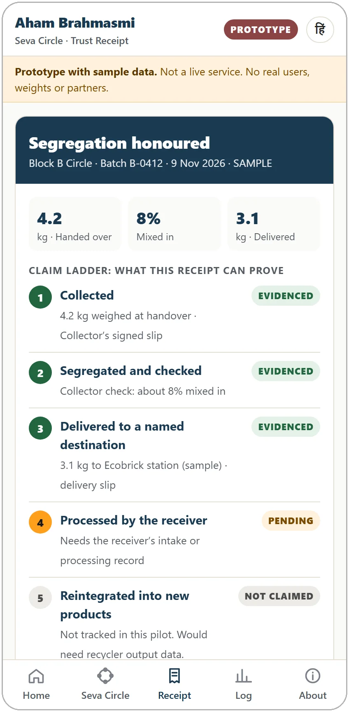

Follow-Through Identity
Culturally rooted behaviour design
Aham Brahmasmi
A framework that links ideas of duty, service and non-harm to behavioural mechanisms, and a prototype of two service ideas built from it.
Identity DONECONCEPT
- Role
- Designer and researcher (solo)
- When
- Dec 2025 – May 2026; prototype Nov 2026
- Context
- M.Des, IIT Hyderabad
- Status
- Framework DONE · prototype CONCEPT · field test PLANNED
Problem
Infrastructure and awareness have grown faster than use. In the SQUAT survey, over 40% of rural households with a working latrine had at least one member who defecated in the open (Coffey et al., 2014). The project asked whether familiar ideas of duty (dharma), service (seva), non-harm (ahimsa) and cleanliness (shaucha) could carry public behaviour where signs and fines do not.
What I did
- Reviewed about 21 sources: COM-B, EAST, broken-windows theory, and two sanitation trials in Odisha and Madhya Pradesh.
- Mapped four cultural concepts to behavioural mechanisms and product hooks, and wrote four intervention concepts with guardrails.
- In a November 2026 review, removed earlier overclaims ("Live Pilot", an NFHS-5 attribution, unsourced impact figures) and published the corrections.
- Built a clickable prototype of the Seva Circle (a 10-minute weekly group routine) and the Trust Receipt (feedback on where a group's waste went), in English and Hindi.
| Cultural concept | Behavioural mechanism | Design hook |
|---|---|---|
| Dharma (duty) | Duty identity | Keeping shared space in order is part of who I am |
| Karma (consequence) | Consequence salience | Seeing what happens to what I discard |
| Seva (service) | Warm glow, belonging | A short weekly group routine |
| Ahimsa (non-harm) | Empathy | Wrapping sharp items to protect the collector |
Evidence
- DONE Desk report (12 pages) with references restored and every unchecked number tagged.
- CONCEPT Prototype with sample data only; no users, no pilot.
- DONE Correction log of 202 changes to the deck, case study and report.
Outcome
A method for designing with cultural meaning, and a prototype specific enough to test. The identity framing is now hypothesis H2 of the thesis.
Honest limits
- No primary research or user testing yet.
- Faith framing must stay voluntary and always sit beside a secular frame; acceptance across communities is untested.
- Scripture citations await a scholar's check; the prototype uses concept names only.
Next
Test identity framing against standard signage in the campus sprint (PLANNED, Dec 2026 – Jan 2027).

